柴原研究室ポスターギャラリーへのリンク：
(下線部をクリックすると論文内容が閲覧できます｡)
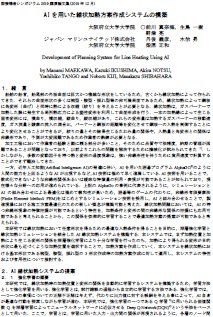
AIを用いた線状加熱方案作成システムの構築前川真奈海，生島一樹，野津亮，丹後義彦，木治昇，柴原正和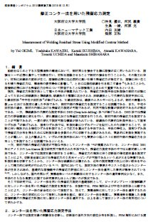
修正コンター法を用いた残留応力測定沖見優衣，河尻義貴，生島一樹，河原充，内田友樹，柴原正和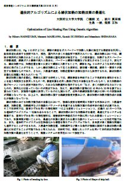
遺伝的アルゴリズムによる線状加熱の加熱方案の最適化橋詰光，前川真奈海，生島一樹，柴原正和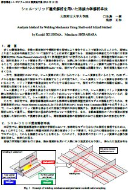
シェル-ソリッド連成解析を用いた溶接力学解析手法生島一樹，柴原正和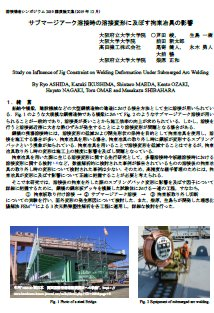
サブマージアーク溶接時の溶接変形に及ぼす拘束冶具の影響に関する検討芦田崚，生島一樹，前田新太郎，尾嵜健人，永木勇人，大前暢，柴原正和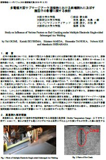
多電極片面サブマージアーク溶接時における終端割れに及ぼす諸因子の影響に関する検討前田新太郎，沖見優衣，生島一樹，谷岡俊介，木治昇，柴原正和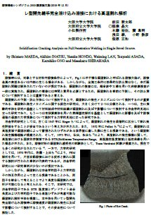
レ型開先継手完全溶け込み溶接時における高温割れ解析前田新太郎，稲津晶大，本藤裕佑，蘭韋明，浅田毅，小野数彦，柴原正和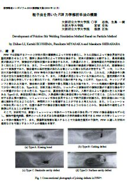
粒子法-FEM連成解析を用いたFSWに関する力学的検討李志浩，生島一樹，柴原正和，宮坂史和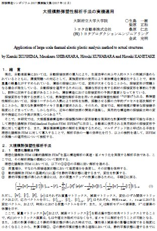
大規模溶接熱弾塑性解析手法の実機適用生島一樹、柴原正和、河充、前田新太郎、桑原仁志、金武完明溶接構造シンポジウム2017論文集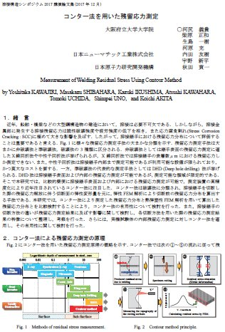
コンター法を用いた残留応力測定河尻義貴、柴原正和、生島一樹、河原充、内田友樹、宇野新平、秋田貢一溶接構造シンポジウム2017論文集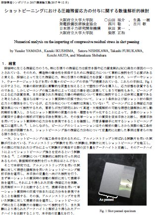
ショットピーニングにおける圧縮残留応力の付与に関する数値解析的検討山田祐介、柴原正和、木谷悠二、生島一樹、西川聡、古川敬、秋田貢一、諸岡聡、鈴木裕士溶接構造シンポジウム2017論文集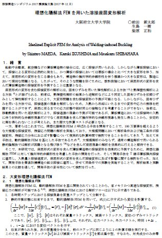
理想化陽解法FEMを用いた溶接座屈変形解析前田新太郎、生島一樹、柴原正和溶接構造シンポジウム2017論文集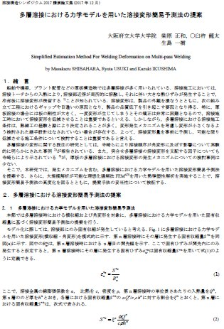
多層溶接の溶接変形に関する簡易力学モデルの構築柴原正和、臼杵龍太、生島一樹溶接構造シンポジウム2017論文集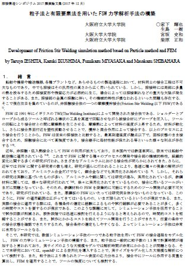
粒子法と有限要素法を用いたFSW力学解析手法の構築家下輝也、生島一樹、柴原正和、宮坂史和溶接構造シンポジウム2017論文集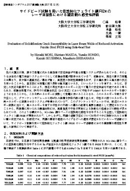
サイドビード試験を用いた低放射化フェライト鋼F82Hのレーザ溶接部における凝固割れ感受性評価森裕章、前田新太郎、本藤裕佑、生島一樹、柴原正和溶接構造シンポジウム2017論文集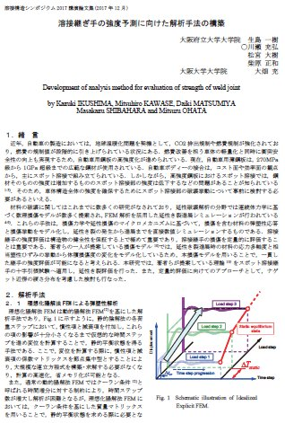
溶接継ぎ手の強度予測に向けた解析手法の構築生島一樹、川瀬充弘、松宮大樹、柴原正和、大畑充溶接構造シンポジウム2017論文集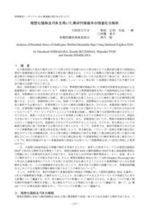
理想化陽解法FEMを用いた異材円筒継手の残留応力解析柴原正和、生島一樹、伊藤真介、西川 聡溶接構造シンポジウム2014論文集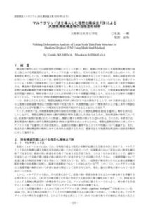
マルチグリッド法を導入した理想化陽解法FEMによる大規模薄板構造物の溶接変形解析生島一樹、柴原正和溶接構造シンポジウム2014論文集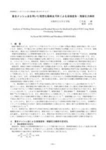
重合メッシュ法を用いた理想化陽解法FEMによる溶接変形・残留応力解析生島一樹、柴原正和溶接構造シンポジウム2014論文集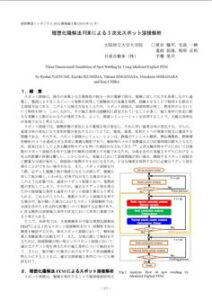
理想化陽解法FEMによる3次元スポット溶接解析夏目糧平、生島一樹、重政拓海、柴原正和、千葉晃司溶接構造シンポジウム2014論文集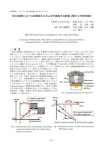
FCB溶接時における端部割れにおよぼす諸因子の影響に関する力学的検討柴原正和，今智史、河原充，生島一樹、幸村正晴，杉山大輔 山下泰生溶接構造シンポジウム2014論文集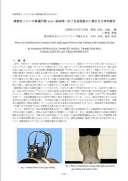
狭開先２トーチ高速円周MAG溶接時における凝固割れに関する力学的検討柴原正和，生島一樹、原田貴明、木村文映，森本拓世溶接構造シンポジウム2014論文集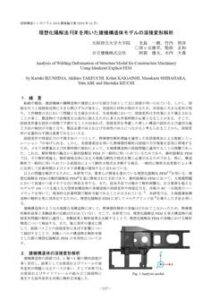
理想化陽解法FEMを用いた建機構造体モデルの溶接変形解析生島一樹，竹内啓洋，貝ヶ石康平，柴原正和，阿部雄太，木内大貴溶接構造シンポジウム2014論文集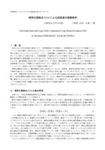
理想化陽解法FEM による超高速大規模解析生島一樹、柴原正和溶接構造シンポジウム2011論文集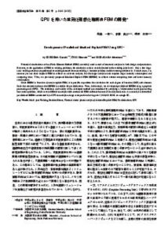
GPUを用いた並列化理想化陽解法FEMの開発生島一樹、伊藤真介、 柴原正和溶接学会論文集 第31巻1号､23-32 (2012)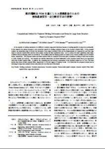
動的陽解法FEMを基にした大規模解析のための溶接過渡変形・応力解析手法の提案柴原正和、生島一樹、伊藤真介、正岡孝治溶接学会論文集 第29巻1号､1-9 (2011)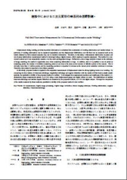
溶接中における三次元変形の時系列全視野計測柴原正和、恩田尚拡、伊藤真介、 正岡孝治溶接学会論文集 第28巻3号､338-345 (2010)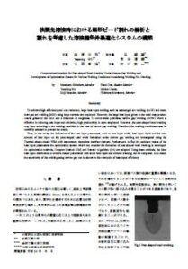
狭開先溶接時における梨形ビード割れの解析と割れを考慮した溶接諸条件最適化システムの構築柴原正和、旦越雄、Yanming WU、畝田道雄、正岡孝治、村川英一船舶海洋工学会論文集(2010)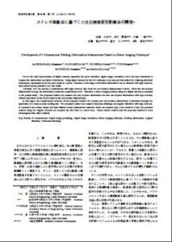
ステレオ画像法に基づく三次元溶接変形計測法の開発柴原正和、河村恵里、生島一樹、 伊藤真介、望月正人、正岡孝治溶接学会論文集 第28巻1号､108-115 (2010)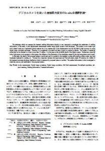
デジタルカメラを用いた溶接面内変形のIn-situ全視野計測柴原正和、山口晃司、恩田尚拡、 伊藤真介、正岡孝治溶接学会論文集 第27巻2号､154-161 (2009)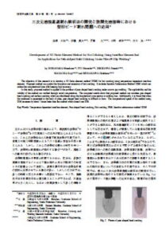
三次元溶接高温割れ解析法の開発と狭開先溶接時における梨型ビード割れ問題への適用柴原正和､伊藤真介､芹澤久､正岡孝治､村川 英一溶接学会論文集 第27巻1号､81-88 (2009)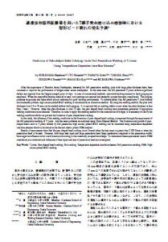
温度依存型界面要素を用いたT継手完全溶け込み溶接時における梨型ビード割れの発生予測柴原正和､伊藤真介､中田康平､鷹羽新二､芹澤久､正岡孝治､村川英一溶接学会論文集 第27巻1号､73-80 (2009) 溶接中における三次元変形の時系列全視野計測恩田尚拡、柴原正和、伊藤真介、正岡孝治 (溶接構造シンポジウム賞 受賞論文)溶接構造シンポジウム2008論文集
溶接中における三次元変形の時系列全視野計測恩田尚拡、柴原正和、伊藤真介、正岡孝治 (溶接構造シンポジウム賞 受賞論文)溶接構造シンポジウム2008論文集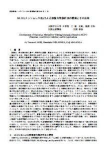
MLPG(メッシュレス法)による溶接力学解析法の開発とその応用堀友則、柴原正和、正岡孝治溶接構造シンポジウム2008論文集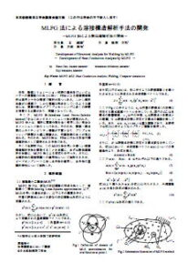
MLPG法による溶接構造解析手法の開発旦越雄､柴原正和､正岡孝治日本船舶海洋工学会講演論文集 (2008年秋季講演会)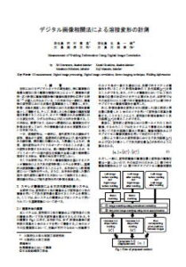
デジタル画像相関法による溶接変形の計測河村恵里､生島一樹､柴原正和､正岡孝治日本船舶海洋工学会講演論文集 (2008年秋季講演会)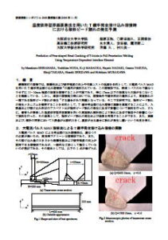
温度依存型界面要素法を用いたT字継手完全溶け込み溶接時における梨型ビード割れ発生予測柴原正和､野田裕久､正岡孝治､他溶接構造シンポジウム2006論文集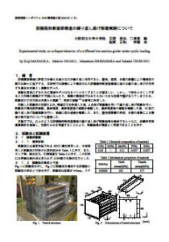
防撓箱形断面梁構造の繰り返し曲げ崩壊実験について正岡孝治､長尾誠､柴原正和､他溶接構造シンポジウム2006論文集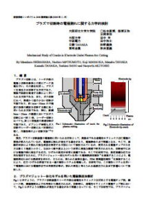
プラズマ切断時の電極割れに関する力学的検討松本直博､柴原正和､正岡孝治､他溶接構造シンポジウム2006論文集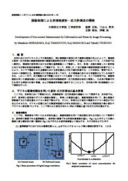
画像処理による非接触変形・応力計測法の開発柴原正和､山口晃司､正岡孝治､他溶接構造シンポジウム2006論文集

防撓箱形断面梁構造の繰り返し曲げ崩壊実験について（PDF文書：933.1KB）
MLPG法による溶接構造解析手法の開発（PDF文書：780.7KB）
画像処理による非接触変形・応力計測法の開発（PDF文書：785.3KB）
温度依存型界面要素法を用いたT字継手完全溶け込み溶接時における梨型ビード割れ発生予測（PDF文書：871.5KB）
プラズマ切断時の電極割れに関する力学的検討（PDF文書：894.0KB）
デジタル画像相関法による溶接変形の計測（PDF文書：1.8MB）
AIを用いた線状加熱方案作成システムの構築（PDF文書：1.4MB）
遺伝的アルゴリズムによる線状加熱の加熱方案の最適化（PDF文書：1.6MB）
シェル-ソリッド連成解析を用いた溶接力学解析手法（PDF文書：1.1MB）
多電極片面サブマージアーク溶接時における終端割れに及ぼす諸因子の影響に関する検討（PDF文書：1.6MB）
修正コンター法を用いた残留応力測定（PDF文書：2.0MB）
サブマージアーク溶接時の溶接変形に及ぼす拘束冶具の影響に関する検討（PDF文書：2.0MB）
粒子法-FEM連成解析を用いたFSWに関する力学的検討（PDF文書：1.3MB）
レ型開先継手完全溶け込み溶接時における高温割れ解析（PDF文書：1.4MB）
大規模溶接熱弾塑性解析手法の実機適用（PDF文書：1.4MB）
ショットピーニングにおける圧縮残留応力の付与に関する数値解析的検討（PDF文書：1.5MB）
理想化陽解法FEMを用いた溶接座屈変形解析（PDF文書：4.2MB）
サイドビード試験を用いた低放射化フェライト鋼F82Hのレーザ溶接部における凝固割れ感受性評価（PDF文書：1.8MB）
多層溶接の溶接変形に関する簡易力学モデルの構築（PDF文書：1.4MB）
溶接継ぎ手の強度予測に向けた解析手法の構築（PDF文書：1.9MB）
粒子法と有限要素法を用いたFSW力学解析手法の構築（PDF文書：2.4MB）
重合メッシュ法を用いた理想化陽解法FEMによる溶接変形・残留応力解析（PDF文書：1.2MB）
理想化陽解法FEMを用いた異材円筒継手の残留応力解析（PDF文書：2.4MB）
理想化陽解法FEMによる3次元スポット溶接解析（PDF文書：1.3MB）
FCB溶接時における端部割れにおよぼす諸因子の影響に関する力学的検討（PDF文書：1.2MB）
マルチグリッド法を導入した理想化陽解法FEMによる大規模薄板構造物の溶接変形解析（PDF文書：4.1MB）
狭開先２トーチ高速円周MAG溶接時における凝固割れに関する力学的検討（PDF文書：1.3MB）
理想化陽解法FEMを用いた建機構造体モデルの溶接変形解析（PDF文書：1.2MB）
理想化陽解法FEM による超高速大規模解析（PDF文書：1.9MB）
狭開先溶接時における梨形ビード割れの解析と割れを考慮した溶接諸条件最適化システムの構築（PDF文書：575.1KB）
動的陽解法FEMを基にした大規模解析のための溶接過渡変形・応力解析手法の提案（PDF文書：4.0MB）
溶接中における三次元変形の時系列全視野計測（PDF文書：3.7MB）
GPUを用いた並列化理想化陽解法FEMの開発（PDF文書：6.0MB）
デジタルカメラを用いた溶接面内変形のIn-situ全視野計測（PDF文書：756.6KB）
ステレオ画像法に基づく三次元溶接変形計測法の開発（PDF文書：805.7KB）
三次元溶接高温割れ解析法の開発と狭開先溶接時における梨型ビード割れ問題への適用（PDF文書：655.4KB）
温度依存型界面要素を用いたT継手完全溶け込み溶接時における梨型ビード割れの発生予測（PDF文書：613.6KB）
MLPG(メッシュレス法)による溶接力学解析法の開発とその応用（PDF文書：508.8KB）
溶接中における三次元変形の時系列全視野計測（PDF文書：3.7MB）
※大阪公立大学 柴原研究室HPより